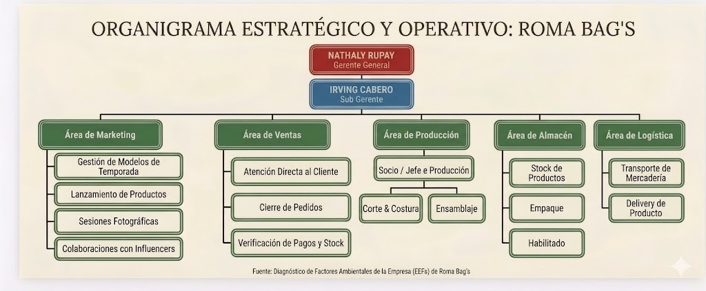
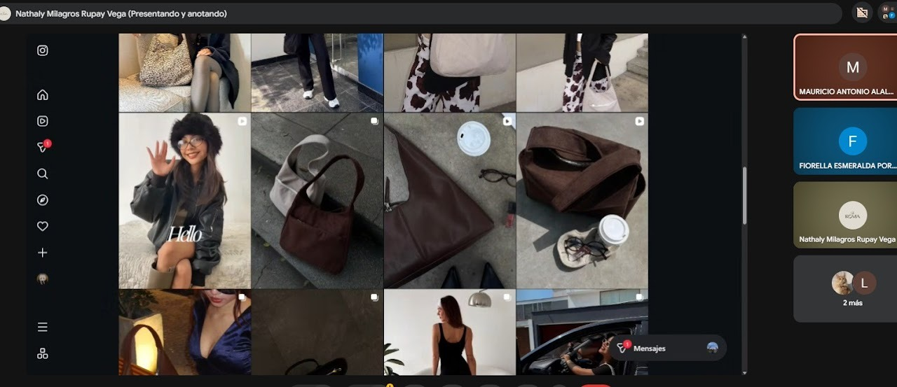
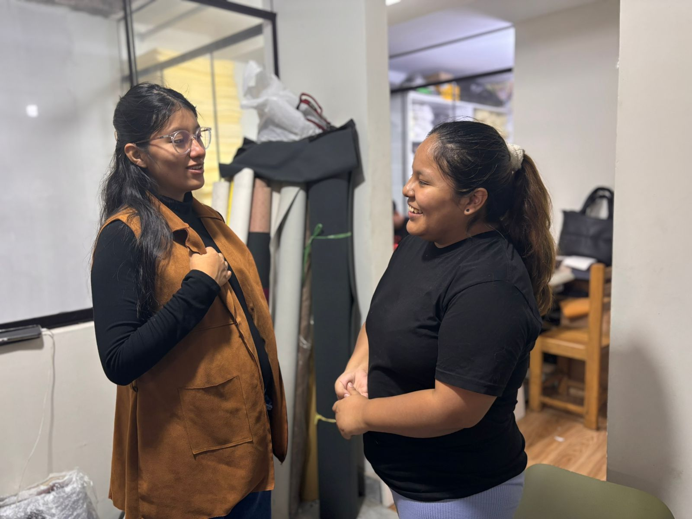
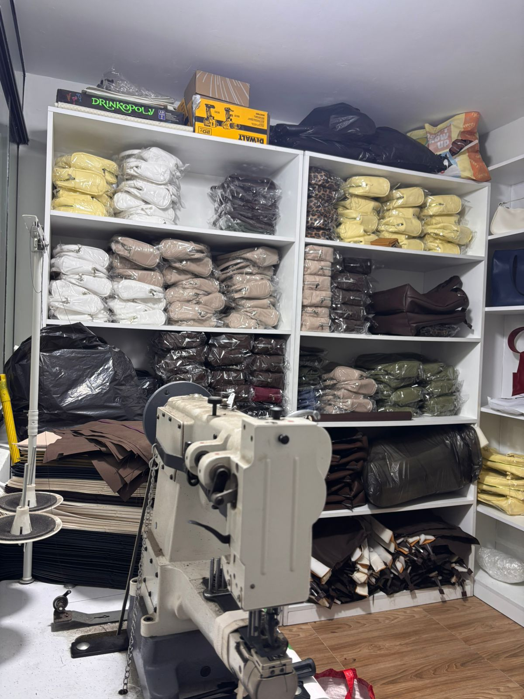
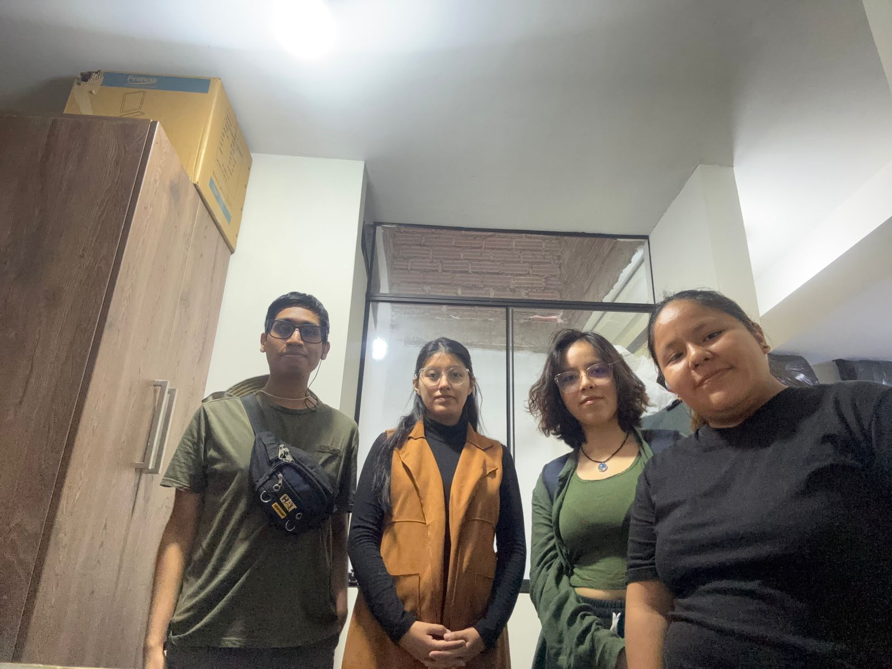
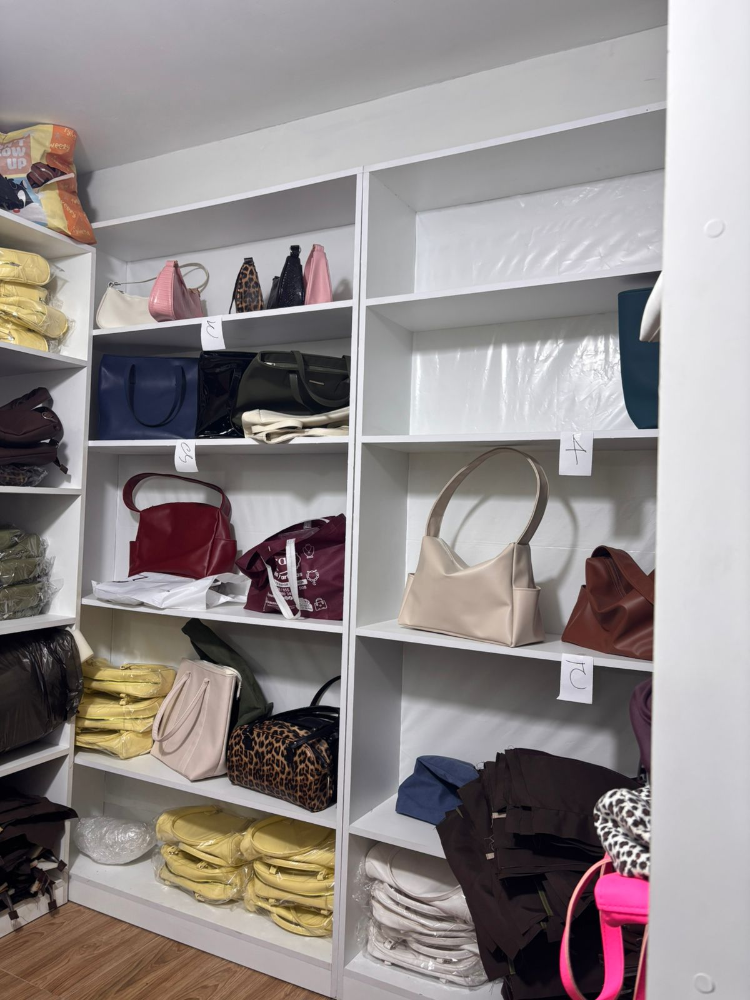

La presente investigación se centra en la microempresa "Roma Bag's", dedicada a la producción artesanal y comercialización de bolsos y carteras. El modelo de negocio opera bajo un enfoque dual: ventas al por mayor (con picos de demanda estacionales entre septiembre y enero) y ventas al por menor. La toma de decisiones está altamente centralizada en la gerencia, la cual no solo asume roles administrativos, sino que también absorbe la carga operativa de marketing, control de almacén y logística de entregas.
CAPÍTULO 01: Entradas (Factores Ambientales y Activos del Negocio)
El objetivo de esta sección es establecer una línea base que permita comprender el entorno operativo y las limitaciones tecnológicas que rodean a la organización.
1.1. Estructura Organizacional
Al tratarse de una microempresa conformada por un equipo de diecinueve personas (18 trabajadores internos en el taller y 1 contratado para logística), la estructura jerárquica es horizontal y altamente dependiente de sus fundadores. Las áreas de trabajo se dividen de la siguiente manera:
Gerencia General (Natalie)Centraliza la toma de decisiones financieras. Ejerce múltiples roles simultáneos asumiendo las funciones de Marketing, Administración de Almacén y Coordinación de Logística.
Área de ProducciónLiderada por el socio cofundador, quien tiene autoridad directa sobre las operaciones de corte, costura y ensamblaje. Cuenta con el apoyo de personal adicional de mano de obra y opera actualmente con una capacidad instalada de tres (3) máquinas de producción.
Área de VentasConformada por personal joven (entre 18 y 35 años) encargado de la atención al cliente, quienes operan principalmente a través de dispositivos móviles.
Logística y EntregasTercerizada a través de personal motorizado contratado específicamente para la distribución de los paquetes a los clientes finales.
Figura 1: Organigrama de Roma Bag's

1.2. Infraestructura y Factores Ambientales (EEFs)
De acuerdo con la teoría de gestión de proyectos, los Factores Ambientales de la Empresa (EEFs) se refieren a aquellas condiciones que no están bajo el control del equipo del proyecto, pero que influyen, restringen o dirigen el desarrollo del mismo, abarcando desde la cultura organizacional hasta la infraestructura tecnológica existente (Institute, 2017). En Roma Bag's, estos factores internos se configuran de la siguiente manera:
Hardware y equipos disponiblesLa empresa opera con una infraestructura de hardware sumamente básica. Disponen de tres (3) computadoras portátiles para uso administrativo, mientras que la operación de campo y registro de los vendedores se realiza netamente a través de seis (6) dispositivos móviles (celulares).
Redes y conectividadCuentan con un servicio de internet de fibra óptica provisto por Movistar. Sin embargo, la topología de red es deficiente; operan con un único router que no cubre todas las áreas de trabajo, generando "zonas muertas" de conectividad (específicamente en el área de transmisiones en vivo o lives de ventas), lo que obliga al personal a depender de sus planes de datos móviles personales.
Software y herramientas de registro actualesExiste una fragmentación en el manejo de la información. El control de insumos y materia prima se realiza de forma manual mediante cuadernos físicos. Por otro lado, la consolidación de ventas se lleva en hojas de cálculo (Excel) con autoguardado en la nube (Google Drive), las cuales son operadas de forma local sin un sistema transaccional integrado.
Ausencia de personal/área de TILa empresa no cuenta con un departamento de soporte técnico, administrador de redes o un contador externo formalizado. Las incidencias técnicas (como la pérdida de conexión o la caída de archivos) son manejadas de forma empírica por la misma gerencia, lo que incrementa el riesgo operativo frente a la implementación de nuevas tecnologías.
1.3. Caso de Negocio (Estado Actual y el "Dolor")
La necesidad de optimización en Roma Bag's nace de un cuello de botella crítico en la gestión de la información, el cual genera latencia operativa y pérdidas económicas directas.
Actualmente, existe un desfase entre el mundo físico (producción y stock real) y el mundo digital (registros en Excel). La Gerencia General invierte un mínimo de dos horas cada sábado, de forma manual, intentando cuadrar la información de los cuadernos de consumo con los registros de venta de los trabajadores.
El principal "dolor" del negocio radica en la vulnerabilidad de estos datos y la falta de información en tiempo real. Debido a las intermitencias en la red Wi-Fi del taller, los archivos de Excel fallan en su proceso de autoguardado, resultando en la pérdida de registros de ventas diarios. Asimismo, el registro manual y desfasado del inventario genera constantes errores de stock ("falsos positivos"); se asume que existe mercadería que en realidad ya fue despachada. Estos errores operativos impactan financieramente a la microempresa, ya que los pedidos se envían incompletos, obligando a la gerencia a asumir el costo de pagar un segundo servicio de motorizado para cumplir con el cliente, además de limitar el tiempo gerencial que podría invertirse en la captación de nuevos clientes mayoristas.
CAPÍTULO 02: Metodología y Recopilación de Datos
2.1. Marco Metodológico de Recopilación
De acuerdo con las buenas prácticas de la Guía de los Fundamentos para la Dirección de Proyectos (PMBOK® 6ta Edición), la fase de diagnóstico exige un acercamiento directo y estructurado con los interesados clave. Para asegurar la fidelidad de los datos en "Roma Bag's" y evitar basar el diseño de la arquitectura de Inteligencia de Negocios en supuestos, el equipo de ingeniería seleccionó dos técnicas formales.
2.1.1. Justificación de la Técnica: Entrevista Semiestructurada (PMBOK® 6.1.2.2)
Técnica FormalEntrevista Semiestructurada
Según el PMBOK®, las entrevistas son un enfoque formal para obtener información directa. Se optó por la modalidad semiestructurada porque permite utilizar un guion base, pero otorga la flexibilidad para profundizar en los "dolores" operativos que el interesado revele. Esta técnica se aplicó en dos modalidades: virtual (para el enfoque gerencial y financiero) y presencial (para evaluar la actitud frente a la tecnología de otros miembros del taller).
2.1.2. Justificación de la Técnica: Observación (PMBOK® 6.1.2.3)
Definida como la técnica que proporciona una manera directa de ver a las personas en su ambiente. Su uso fue metodológicamente imperativo durante la visita presencial para validar empíricamente la línea base declarada por la gerencia: auditar el hardware real disponible, mapear las "zonas muertas" de red Wi-Fi y verificar físicamente el uso de los cuadernos de inventario que generan el desfase de información.
2.2. Diseño y Validación de Instrumentos
Para estandarizar la recolección, evitar sesgos y guiar las sesiones, se diseñaron herramientas de medición específicas, separando claramente la "técnica" (acción) del "instrumento" (documento).
2.2.1. Estructura del Guion de Entrevista (Ejes Temáticos)
El cuestionario principal (Ver Anexo 1.1 y 1.2) fue construido bajo un enfoque modular, dividiendo las preguntas en ejes estratégicos orientados al diagnóstico técnico:
Bloque 1Entorno y Procesos (Factores Ambientales / EEFs).
Bloque 2El Dolor y el Valor (Caso de Negocio e ineficiencias).
Bloque 3Expectativas Técnicas y Usabilidad (Requisitos).
Bloque 4Stakeholders y Cultura Organizacional (Cubo de Interesados).
Bloque 5Viabilidad Operativa.
2.2.2. Diseño de la Ficha de Registro de Campo
Herramienta tipo checklist y registro visual utilizada exclusivamente para la técnica de observación in situ. Orientada a levantar el inventario de equipos (PC y terminales móviles) y documentar el entorno físico del taller de producción.
2.2.3. Protocolo de Validación (Juicio de Expertos / Prueba Piloto)
Previo a su ejecución, los instrumentos fueron sometidos a una revisión interna por el equipo de proyecto (Camargo, Estrada, Alaluna y Portalanza) para garantizar que las interrogantes posean el nivel técnico exigido para un análisis de Sistemas de Información, asegurando la captura de datos duros (tiempo, dinero, stock) aplicables a modelos de Inteligencia de Negocios y predicción, tomando en consideración las directrices académicas del curso.
2.3. Bitácora de Ejecución y Levantamiento de Información
El levantamiento de requisitos se ejecutó de manera escalonada para contrastar la versión administrativa con la realidad operativa del taller. Las evidencias completas, fichas técnicas y transcripciones de estas sesiones se encuentran documentadas en la sección de Anexos del presente informe.
2.3.1. Sesión 01: Diagnóstico de Entorno (Virtual - Google Meet)
Participante: Natalie (Gerencia Operativa). Enfoque: Entrevista administrativa orientada a descubrir el modelo de negocio, flujo de ventas, gestión actual en Excel y cuantificación de pérdidas de tiempo operativo. Referencia: Detalles técnicos y transcripción en Anexos 2.1 y 3.1.
2.3.2. Sesión 02: Validación de Infraestructura y Stakeholders (Presencial - In Situ)
Fecha de ejecución: 4 de mayo de 2026 (11:20 am - 12:00 pm). Ubicación: Taller de Producción "Roma Bag's". Participante Principal: Natalie (Gerencia), con observación indirecta del socio de producción y entorno de trabajo. Enfoque: Auditoría de hardware, mapeo de red de fibra óptica, validación de cuadernos físicos y perfilamiento de resistencia al cambio (Influyente Bloqueador). La sesión fue liderada por Camargo Rojas (Entrevista), Estrada Ruiz (Auditoría de Hardware), Alaluna Godinez (Apoyo Metodológico) y Portalanza Hurtado (Registro). Referencia: Ficha técnica, panel fotográfico y transcripción en Anexos 2.3, 2.4 y 3.1.
2.3.3. Sesión 03
[Espacio reservado para futuras entrevistas o levantamiento de requisitos con personal operativo]
2.4. Registro de Evidencias de Campo
El proceso de validación operativa y diagnóstico se encuentra sustentado en material audiovisual y documental, asegurando la trazabilidad de los requisitos del proyecto.
2.4.1. Panel de Evidencias Fotográficas y Capturas de Pantalla
Evidencia Virtual: Capturas de sesión de la entrevista gerencial vía Google Meet (Ver Anexo 2.2). Evidencia Presencial: Panel fotográfico del entorno operativo, infraestructura tecnológica (tres laptops y seis dispositivos móviles celulares) y registro manual (cuadernos de inventario) en el taller de Roma Bag's (Ver Anexo 2.4).
2.4.2. Repositorio de Documentación (Enlaces a Transcripciones y Audios)
Transcripción Meet: Ver Anexo 3.1. Transcripción Presencial: Ver Anexo 3.1 (Fase 2). (Nota: Se adjuntan hipervínculos a los repositorios en la nube en las fichas técnicas de los Anexos 2.1 y 2.3).
2.5. Procesamiento y Análisis de Hallazgos por Sesión
El análisis de la recolección de datos no se basa en la transcripción literal, sino en la extracción de "datos duros" (métricas de tiempo, dinero, recursos e infraestructura) que validan el caso de negocio y justifican la necesidad de la arquitectura de Inteligencia de Negocios.
2.5.1. Análisis de Resultados: Sesión 01 (Virtual - Google Meet)
Enfocada en el modelo de negocio y control gerencial. Los principales hallazgos fueron:
Procesos DiariosNo existe un control automatizado de insumos; se registran en cuadernos físicos, y el stock general se revisa diariamente sin histórico fijo.
Métricas de IneficienciaLa gerencia admitió invertir "fácilmente 2 horas al día" verificando que los saldos coincidan debido a errores de fórmulas manuales en Excel.
KPI EstratégicoSe determinó como expectativa de éxito un incremento significativo de las ventas (estimado en un mínimo del 50%) si se optimiza el tiempo administrativo, enfocando la producción en una meta inicial de 20 unidades diarias.
Restricción TecnológicaExiste un miedo latente y explícito a la pérdida de información en plataformas en la nube, lo que condiciona la propuesta a un sistema de alta redundancia o visualización en modo lectura.
2.5.2. Análisis de Resultados: Sesión 02 (Presencial - In Situ)
Enfocada en infraestructura, validación de procesos físicos y perfilamiento de stakeholders. Los hallazgos confirmaron las hipótesis del proyecto:
Infraestructura de Red IneficienteSe comprobó la existencia de conexión de fibra óptica, pero con deficiencias de cobertura (zonas muertas) durante la operación de ventas online, forzando la dependencia de planes de datos móviles.
Pérdida Económica DirectaSe evidenció un sobrecosto operativo real ("pagar otra vez motorizado para que llegue") ocasionado por errores de transcripción entre el cuaderno físico y el Excel.
Limitación Analítica de DatosSe confirmó la eliminación de registros históricos (año 2024 borrado), contando actualmente con una base de datos reducida a 8 meses, lo cual limita temporalmente el alcance del modelo predictivo interanual.
Cultura y Resistencia (Stakeholders)Se identificó al Socio de Producción como un potencial "Influyente Bloqueador", ya que posee autoridad para vetar la herramienta frente a una primera falla. Contrastando, el personal joven (17-35 años) muestra una actitud "Promotora" ante la visualización de metas vía móvil.
2.5.3. Matriz Comparativa de Hallazgos Consolidados
Para orientar las fases posteriores del proyecto, se consolida la problemática (el "Dolor") con su respectivo impacto métrico extraído de ambas sesiones.
Categoría
Hallazgo Operativo / Dolor Identificado
Impacto / Métrica
Tiempo
Consolidación y cuadre manual (cuaderno vs Excel).
Pérdida de 2 horas semanales exclusivamente en cuadrar cuentas.
Costo
Errores de "falsos positivos" en inventario y despachos incompletos.
Sobrecosto logístico directo (doble pago de delivery por errores de anotación).
Datos
Volatilidad y pérdida de bases de datos por interrupciones de red o borrado manual.
Riesgo alto de integridad; solo 8 meses de dataset histórico seguro.
Recursos
Dependencia de infraestructura móvil personal ante la baja cobertura Wi-Fi.
Equipo "Mobile-First" forzado; gestión fragmentada entre tres (3) laptops y seis (6) dispositivos móviles (celulares).
CAPÍTULO 03: Identificación y Registro de Interesados
En alineación con la Guía de los Fundamentos para la Dirección de Proyectos (PMBOK® 6ta Edición), el proceso de Identificar a los Interesados es fundamental para reconocer a todas las personas u organizaciones que pueden afectar, verse afectados o percibirse a sí mismos como afectados por una decisión, actividad o resultado del proyecto.
El presente capítulo formaliza el inicio del análisis de stakeholders para "Roma Bag's", separando a los actores según su ubicación respecto a los límites de la organización y documentando sus expectativas operativas actuales (su día a día), estableciendo así la línea base antes de introducir cualquier propuesta tecnológica.
3.1. Interesados Internos
Son aquellos actores que operan dentro de la estructura de la microempresa y cuyas labores cotidianas están directamente vinculadas al flujo de valor, desde la confección hasta la salida del producto.
Gerencia General (Natalie)Actor central del negocio. Centraliza las decisiones financieras, la administración del almacén, el cruce de cuentas y el marketing. Es la principal responsable de absorber la carga operativa manual.
Socio / Jefe de ProducciónCofundador del taller. Lidera físicamente los procesos de corte, costura y ensamblaje, garantizando una producción promedio de 30 a 40 carteras diarias. Posee una visión netamente operativa y pragmática del negocio.
Personal de VentasEquipo operativo conformado por jóvenes (rango de edad entre 17 y 35 años). Son la fuerza de primera línea en la atención al cliente, interactuando constantemente a través de dispositivos móviles y redes sociales (ej. transmisiones en vivo).
Personal de EmpaqueOperarios encargados de embalar las carteras una vez confirmada la venta, preparándolas para su despacho físico.
3.2. Interesados Externos
Agrupa a las entidades o individuos que no forman parte de la planilla directa del taller, pero que interactúan comercialmente con Roma Bag's y se ven impactados por la eficiencia (o ineficiencia) de sus procesos internos.
Clientes MayoristasRepresentan el núcleo de rentabilidad, especialmente en la temporada de febrero a mayo. Compran en volumen y exigen respuestas inmediatas sobre la disponibilidad del stock real para abastecer sus propios negocios.
Clientes MinoristasCompradores unitarios, con alta presencia en campañas específicas (septiembre a enero por festividades).
Logística Tercerizada (Motorizados)Personal externo subcontratado (o enviado directamente por los clientes mayoristas) encargado exclusivamente del recojo y entrega (delivery) de los paquetes.
Proveedores de Insumos / Taller AlternoIncluye a los proveedores de materia prima y al taller de apoyo (gestionado por la hermana de la Gerencia), el cual provee carteras adicionales en momentos de alta demanda para evitar quiebres de stock.
3.3. Registro Base de Interesados
A continuación, se presenta el documento formal del proyecto (Stakeholder Register). De acuerdo con el rigor metodológico exigido, esta matriz documenta las expectativas frente a su labor actual, aislando temporalmente la solución de software propuesta para entender qué buscan realmente en su entorno de trabajo.
ID
Interesado (Rol)
Tipo
Expectativas y Requisitos de su Labor Actual (Día a Día)
SH-01
Gerencia General (Natalie)
Interno
- Conocer el monto exacto de ganancia neta mensual (actualmente reinvierte el flujo de caja en compras sin calcular la utilidad real). - Reducir las 2 horas operativas que invierte cada sábado cruzando cuentas y stock. - Evitar quiebres de stock o despachos incompletos por errores de anotación manual.
SH-02
Jefe de Producción (Socio)
Interno
- Mantener un ritmo de trabajo fluido en costura y corte (30 a 40 unidades diarias) sin interrupciones por tareas administrativas. - Procesos de trabajo estables que no presenten errores o fallos que retrasen la operación física.
SH-03
Personal de Ventas
Interno
- Conocer el inventario exacto en tiempo real para cerrar ventas rápidamente con los clientes mediante dispositivos móviles (usando planes de datos propios). - Recibir motivación o reconocimiento visual por el cumplimiento de sus metas comerciales.
SH-04
Personal de Habilitado y Empaque
Interno
- Recibir órdenes claras y precisas sobre qué modelos separar y ensamblar, sin confusiones que generen reprocesos en el taller.
SH-05
Clientes Mayoristas
Externo
- Que la mercadería solicitada esté completa al 100% y sea entregada a tiempo, especialmente en la temporada alta (febrero a mayo). - Transparencia y rapidez cuando consultan por la disponibilidad de nuevo stock.
SH-06
Logística (Motorizado)
Externo
- Recoger paquetes completos en un solo viaje para no asumir traslados dobles no remunerados (o pagados extra por la tienda a causa de errores de inventario).
CAPÍTULO 04: Análisis Profundo de Interesados
En concordancia con los lineamientos del PMBOK® (6ta Edición), la simple identificación de los interesados es insuficiente para garantizar el éxito de un proyecto. Este capítulo profundiza en la evaluación analítica de los actores de "Roma Bag's", aplicando herramientas de clasificación avanzadas para determinar su capacidad de influencia, urgencia operativa y, fundamentalmente, su actitud frente a la introducción de cambios tecnológicos.
4.1. Cubo de Interesados (Stakeholder Cube)
Para evaluar la complejidad del factor humano en la microempresa, se aplica el modelo tridimensional del Cubo de Interesados, el cual clasifica a los actores en 8 categorías según sus vectores de: Poder (+/-), Interés (+/-) y Actitud (+/-).
Con base en la información extraída de la entrevista (Capítulo 2), se clasifica a los actores clave:
Interesado
Cubo
Poder
Interés
Actitud
Categoría PMBOK
Análisis Estratégico
Gerencia (Natalie)
6
+
+
+
Influyente activo partidario
Desea fervientemente la organización de datos para vender más, aunque posee un temor latente a la pérdida de información.
Socio (Producción)
2
+
+
-
Influyente activo bloqueador
Hallazgo Crítico: Tiene autoridad compartida en el taller. Según la entrevista: "Basta que vea un error, ya no lo usaría". Su intolerancia a las fallas tecnológicas lo convierte en un alto riesgo.
Personal de Ventas
7
-
+
+
Insignificante activo partidario
Son jóvenes (17 a 35 años) muy familiarizados con dispositivos móviles. Mostrarles gráficos y metas les resulta motivador.
4.2. Modelo de Prominencia (Salience Model)
Este modelo clasifica a los interesados según su Poder (autoridad para influir), Legitimidad (relación adecuada y justificada con el proyecto) y Urgencia (necesidad de atención inmediata). Esta priorización dictará a quién se debe atender primero durante el diseño de la solución.
Interesado
Poder
Legitimidad
Urgencia
Categoría
Justificación del Nivel de Prioridad
Gerencia General
SÍ
SÍ
SÍ
Crítico (7)
Posee el presupuesto, es la dueña legítima y sufre una urgencia operativa severa (pierde horas y dinero por errores). Exige atención inmediata.
Socio (Producción)
SÍ
SÍ
NO
Dominante (4)
Tiene poder y legitimidad como dueño, pero no tiene urgencia por cambiar el sistema, ya que su enfoque es netamente físico (confección).
Personal de Ventas
NO
SÍ
SÍ
Dependiente (6)
Tienen la urgencia de conocer el stock real para cerrar ventas, pero carecen de poder para imponer el uso de un software.
Mayoristas
NO
SÍ
SÍ
Dependiente (6)
Tienen urgencia por recibir su mercadería sin errores de stock, dependiendo de la gerencia para obtenerla.
4.3. Dirección de la Influencia
Este mapeo clasifica a los interesados según el flujo de autoridad y comunicación dentro de la estructura de Roma Bag's, permitiendo al equipo del proyecto saber cómo canalizar los requerimientos.
Ascendente (Hacia la alta dirección)Gerencia General (Natalie) y el Socio de Producción. A ellos se les presentarán las propuestas de viabilidad, los mockups (prototipos visuales) y de ellos emanará la aprobación final.
Descendente (Hacia el equipo)Personal de Ventas y de Empaque. Son los receptores del impacto del proyecto. La influencia fluye hacia ellos en forma de capacitaciones (estimadas en 30-40 minutos) y directrices de adopción.
Hacia Afuera (Externos)Clientes Mayoristas y Personal Logístico (Motorizados). Se beneficiarán de forma tangencial (indirecta) por la exactitud de los despachos y la reducción de viajes dobles.
Lateral (Colaboradores externos)Taller alterno (Hermana de la dueña), que provee stock de respaldo. Se debe mantener comunicación para estandarizar la entrega de productos.
4.4. Análisis de Riesgos y Expectativas (Mapeo de Resistencia)
El levantamiento de datos evidenció barreras culturales y operativas que podrían hacer fracasar la implementación de cualquier sistema tecnológico. Se han identificado dos focos de riesgo principal ligados a la resistencia al cambio:
Riesgo por "Miedo Operativo" (Riesgo del Sponsor)
La Expectativa: La gerencia desea ver analítica predictiva interanual.
La Resistencia: Existe un trauma previo documentado ("el Excel del año pasado lo borré y a veces falla el autoguardado"). El temor absoluto es corromper su archivo actual.
Impacto en el Proyecto: Cualquier solución transaccional que reemplace bruscamente su Excel será rechazada.
Riesgo por Intolerancia a la Falla (Riesgo del Socio)
La Expectativa: El socio exige que la producción no se detenga por tareas administrativas.
La Resistencia: Clasificado como "Influyente Bloqueador". Su resistencia es condicional; adoptará el sistema si funciona a la primera, pero lo saboteará pasivamente (dejando de usarlo) ante el más mínimo fallo de red o error de interfaz.
Impacto en el Proyecto: Exige que la etapa de pruebas (testing) sea exhaustiva antes del despliegue en taller, ya que no habrá una "segunda oportunidad" para generar confianza en esta área.
CAPÍTULO 05: Planificación del Involucramiento de los Interesados
Siguiendo la metodología del PMBOK® (Sexta Edición), una vez identificados y analizados los interesados, es imperativo desarrollar enfoques para involucrarlos en el proyecto basándose en sus necesidades, expectativas e impacto potencial. Este proceso se desglosa en Entradas, Herramientas y Salidas.
5.1. Entradas (Inputs)
Para formular el plan, se toman como base los artefactos y condiciones analizadas previamente en la organización "Roma Bag's":
Registro de InteresadosDocumento que contiene la información, clasificación (Cubo de Interesados) y expectativas de los 6 stakeholders clave (SH-01 a SH-06).
Factores Ambientales (EEFs)La cultura organizacional actual, marcada por la resistencia al uso de la nube (por pérdida previa de Excel) y la dependencia de dispositivos móviles.
Activos de los Procesos (OPAs)Los procedimientos informales actuales: cuadernos de registro manual y el Excel de gerencia gestionado los sábados.
5.2. Herramientas y Técnicas: Matriz de Evaluación del Nivel de Participación
Esta herramienta compara el nivel de participación Actual (A) de los interesados con el nivel Deseado (D) requerido para el éxito de la arquitectura de Inteligencia de Negocios. Los niveles se clasifican en: Desconocedor, Reticente, Neutral, Partidario y Líder.
Interesado
Desconocedor
Reticente
Neutral
Partidario
Líder
Gerencia (Natalie)
A
D
Socio (Producción)
A
D
Personal de Ventas
A / D
Logística (Motorizado)
A
D
Leyenda: A = Nivel Actual | D = Nivel Deseado. El objetivo estratégico es desplazar la "A" hacia la "D" en cada actor.
5.3. Salidas: Plan de Involucramiento (Estrategias)
A partir de la matriz, se definen las acciones de mitigación para cerrar las brechas entre el estado actual y el deseado, enfocándose en los riesgos detectados.
Estrategia para el Socio (Reticente a Neutral) Objetivo: Evitar el boicot técnico. Acción: Implementar el sistema en paralelo ("Shadow Run"). El taller no abandonará sus cuadernos físicos hasta que el software demuestre cero fallas operativas durante una semana de prueba.
Estrategia para la Gerencia (Partidaria a Líder) Objetivo: Vencer el miedo a la nube. Acción: Capacitación en protocolos de redundancia. Se le mostrará cómo el tablero de control solo lee los datos (modo lectura), garantizando que es imposible que el sistema borre su base original.
Estrategia para Ventas (Mantener Partidarios) Objetivo: Adopción rápida de la herramienta. Acción: Despliegue de una interfaz "Mobile-First" limpia, enfocada netamente en disponibilidad de stock y cumplimiento de metas, respetando el uso de sus dispositivos móviles actuales.
CAPÍTULO 06: Árbol de Problemas y Árbol de Objetivos
Para estructurar la solución de Inteligencia de Negocios, es necesario modelar lógicamente la relación de causa-efecto del negocio mediante la metodología del Marco Lógico. Esto permite traducir los "dolores" operativos de Roma Bag's en requerimientos técnicos viables.
6.1. Árbol de Problemas (Diagnóstico de la Situación Actual)
El problema central radica en la ineficiencia operativa que se traslada a la gerencia y a la logística del negocio.
EFECTOS (Impacto en el negocio)
Pérdida de 2 horas semanales gerenciales cruzando datos.
Sobrecostos logísticos (doble pago de delivery por despachos incompletos).
Toma de decisiones financieras a ciegas sin cálculo de ganancia neta.
↑
PROBLEMA CENTRAL: Gestión deficiente, fragmentada y manual de la información transaccional y de inventario en "Roma Bag's".
↑
CAUSAS (Origen del problema)
Registro en cuadernos físicos desfasados de la nube.
Zonas muertas de conectividad Wi-Fi en el taller.
Uso fragmentado de dispositivos (Excel autoguardado que falla en laptops vs 6 celulares de ventas).
6.2. Árbol de Objetivos (Estrategia de Solución)
Se invierten las condiciones negativas del Árbol de Problemas hacia estados positivos alcanzables mediante la implementación del proyecto de Sistemas de Información.
FINES (Beneficios Esperados)
Recuperación del tiempo gerencial para buscar nuevos clientes (Aumento de ventas).
Eliminación de sobrecostos logísticos por errores ("Falsos Positivos" a cero).
Visibilidad en tiempo real de la ganancia neta mensual.
↑
OBJETIVO CENTRAL: Implementar una Arquitectura de Inteligencia de Negocios para centralizar y automatizar la información transaccional de "Roma Bag's".
↑
MEDIOS (Soluciones Tecnológicas)
Diseño de tableros de control visuales orientados a dispositivos móviles.
Optimización de la captura de datos mitigando las fallas de red del taller.
Capacitación en uso de herramientas y respaldo de bases de datos.
ANEXOS
ANEXO 1: Instrumentos de Recolección de Datos
Anexo 1.1. Guion de Entrevista Semiestructurada (Gerencia - Virtual)
UNIVERSIDAD NACIONAL TECNOLÓGICA DE LIMA SUR (UNTELS)
Carrera:Ingeniería de Sistemas
Proyecto:Sistemas de Información "Roma Bag's"
Equipo:Alaluna Godinez, Mauricio A. · Camargo Rojas, Maria del Cielo · Estrada Ruiz, Luis A. · Portalanza Hurtado, Fiorella
Objetivo:Diagnosticar los factores ambientales, el dolor del negocio y los requisitos operativos de la microempresa para la propuesta de una arquitectura de Inteligencia de Negocios.
Bloque 1: Entorno y Procesos (Factores Ambientales)
1. ¿El Excel de ventas e insumos lo actualizan en tiempo real cada vez que venden, o juntan todo y hacen un vaciado al final del día/semana?Respuesta: [___]
2. ¿A nivel de dispositivos, el personal usa sus propios celulares o la empresa les da equipos para registrar la información?Respuesta: [___]
3. ¿Tienen un control numérico exacto en el Excel de cuántos insumos les quedan?Respuesta: [___]
Bloque 2: El Dolor y el Valor (Caso de Negocio)
4. ¿Cuánto tiempo te toma a fin de mes cruzar la información para saber qué modelo se vendió más o qué cliente compró más?Respuesta: [___]
5. ¿Si te ahorraras esas horas de trabajo en Excel, en qué área invertirías ese tiempo?Respuesta: [___]
6. ¿Esperas que esta herramienta te ayude más a vender o a organizarte?Respuesta: [___]
7. ¿Sabes con exactitud qué modelo de cartera te deja mayor ganancia?Respuesta: [___]
Bloque 3: Expectativas Técnicas y Usabilidad (Requisitos)
8. ¿Qué tendría que pasar en tres meses para considerar que el proyecto valió la pena?Respuesta: [___]
9. ¿Qué dato revisarías cada mañana en el sistema?Respuesta: [___]
10. ¿Esperas que la herramienta reemplace completamente el Excel?Respuesta: [___]
11. ¿Prefieres visualizar los gráficos desde una laptop o desde el celular?Respuesta: [___]
Bloque 4: Stakeholders y Cultura Organizacional
12. ¿Quién toma las decisiones y quién se estresa más llenando datos?Respuesta: [___]
13. ¿Cuánto tiempo esperas que tu personal dedique a aprender estas herramientas?Respuesta: [___]
14. ¿Los empleados podrán visualizar los gráficos y resultados?Respuesta: [___]
15. ¿Cuál sería tu mayor preocupación al usar una nueva plataforma?Respuesta: [___]
Anexo 1.2. Guion de Entrevista de Campo (Visita Presencial)
UNIVERSIDAD NACIONAL TECNOLÓGICA DE LIMA SUR (UNTELS)
Tipo de Instrumento:Guion Semiestructurado In Situ (Filtrado según interacción real)
Objetivo:Auditar la infraestructura física, validar el flujo de trabajo en el taller y perfilar a los interesados según las dimensiones de Poder, Interés y Actitud (Cubo de Interesados).
Bloque 1: Entorno, Infraestructura y Organigrama (EEFs)
1. Para detallar el organigrama, ¿cuáles son las áreas exactas de trabajo y cuántas personas conforman la empresa contando al personal logístico?Respuesta: [___]
2. Aparte de ti, ¿hay algún socio o encargado que tome decisiones cuando no estás presente en el taller?Respuesta: [___]
3. En el taller, ¿qué proveedor de internet tienen y el router cubre bien todas las áreas de trabajo o te quedas sin señal?Respuesta: [___]
4. ¿Has tenido fallas perdiendo información en Excel cuando se corta el internet y falla el autoguardado?Respuesta: [___]
Bloque 2: Cuantificación del Dolor Operativo
5. ¿Cuántas horas mínimas utilizas para llenar el Excel y cuadrar cuentas, y qué día de la semana lo haces?Respuesta: [___]
6. De los errores de desfase que tienes entre tu cuaderno físico y el Excel, ¿sientes que pierdes dinero o asumes sobrecostos operativos (como pagar doble motorizado)?Respuesta: [___]
7. En el proceso diario, ¿cuántas carteras logran producir por día y cuántos modelos manejan en el taller?Respuesta: [___]
Bloque 3: Análisis de Datos y Expectativas Estratégicas
8. Para alimentar un modelo de predicción, ¿cuántos años o meses de registro histórico de ventas tienes guardados actualmente?Respuesta: [___]
9. No tienes un cálculo mensual exacto, pero ¿cuál es tu promedio de ventas semanal aproximado?Respuesta: [___]
10. Si la plataforma te ahorrara el trabajo manual de fin de mes, ¿qué acciones estratégicas implementarías con ese tiempo libre?Respuesta: [___]
11. Aparte del autoguardado, ¿tienes alguna política de copia de seguridad (Google Drive) para no perder tu información?Respuesta: [___]
Bloque 4: Gestión de Interesados y Resistencia al Cambio (Stakeholders)
12. Si un día el tablero visual falla y no muestra datos, ¿quién sería la persona dentro del taller que se vería más afectada o retrasada en su trabajo urgente?Respuesta: [___]
13. ¿Cuál es la edad promedio de tus vendedores y cómo tomarían ver sus metas diarias en el celular (como motivación o se sentirían vigilados)?Respuesta: [___]
14. Analizando la resistencia al cambio, si mañana implementamos el sistema, ¿quién crees que sería el primero en quejarse o dejar de usarlo si ve un error?Respuesta: [___]
15. Si el sistema expone que un trabajador comete errores, ¿crees que el equipo trataría de boicotear la plataforma por miedo a sanciones?Respuesta: [___]
16. A nivel personal, ¿te genera entusiasmo ver tu negocio modernizado y con gráficos de tus ganancias reales por mes?Respuesta: [___]
Bloque 5: Viabilidad Operativa
17. Al diseñar esta herramienta para celulares, ¿el personal utilizaría su plan de datos móviles o el WiFi del taller?Respuesta: [___]
18. En el futuro, cuando los datos crezcan, ¿estarías dispuesta a asumir el costo mínimo de un servicio de nube privada?Respuesta: [___]
ANEXO 2: Evidencias de Ejecución y Registro Técnico
Anexo 2.1. Ficha Técnica de la Entrevista Virtual
Fecha de Ejecución:21 de abril de 2026
Hora de Inicio / Fin:11:10 – 12:00
Plataforma / Modalidad:Google Meet (Virtual)
Entrevistada:Natalie (Gerencia Operativa - Roma Bag's)
Panel de Entrevistadores:Líder de Entrevista: Camargo Rojas, Maria del Cielo. Apoyo Técnico: Alaluna Godinez, Mauricio Antonio. Apoyo Técnico: Estrada Ruiz, Luis Augusto.
Figura 1: Reunión en Google Meet con la Gerente de Roma Bag's.

Anexo 2.3. Ficha Técnica de la Visita de Campo (Presencial)
Fecha de Ejecución:4 de Mayo de 2026
Hora de Inicio / Fin:11:20 – 12:00
Modalidad:Presencial (Visita de Campo / Job Shadowing)
Ubicación:Taller de Producción "Roma Bag's"
Entrevistada Principal:Natalie (Gerencia Operativa y Propietaria)
Panel de Investigadores:Líder de Entrevista (Speaker 0): Camargo Rojas, Maria del Cielo. Auditor de Hardware (Speaker 2): Estrada Ruiz, Luis Augusto. Apoyo Metodológico (Speaker 3): Alaluna Godinez, Mauricio Antonio. Observadora / Registro: Portalanza Hurtado, Fiorella.
Objetivo de la Visita:Validar la línea base de infraestructura (hardware/redes), realizar observación directa del manejo de cuadernos físicos y evaluar las dimensiones del Cubo de Interesados (resistencia al cambio).
Anexo 2.4. Evidencia Visual de la Visita Presencial
Figura 2: Entrevista con la Gerencia General.

Figura 3: Interior del área de producción de Roma Bag's.

Figura 4: Observación de Campo y Validación.


Figura 5: Infraestructura Tecnológica (PC y Terminal Móvil). Leyenda: Vista de las 3 laptops y los 6 dispositivos móviles celulares utilizados para registrar los cuadres de almacén y ventas.
ANEXO 3: Transcripción de Hallazgos y Diálogo Crítico
Anexo 3.1. Transcripción de la Entrevista Virtual (Google Meet)
ML
María (Líder)
Ya está. A ver, Natalie, te vamos a hacer unas preguntas, ¿ya? El proyecto básicamente consiste en formular e implementar una arquitectura de inteligencia de negocios que más o menos son tableros de control donde vas a poder interactuar tú misma con lo que es, por ejemplo, las ventas que haces de forma anual, mensual o por diario y también las ganancias que tú tienes, ¿no? Eso es lo que se busca hacer. Son en total algunas preguntitas divididas por tres bloques. La primera pregunta es: ¿tú manejas tus ventas en un Excel, ¿no?
NG
Natalie (Gerente)
Sí, en un Excel.
ML
María (Líder)
¿Tú sueles actualizar esto a tiempo real?
NG
Natalie (Gerente)
No, a diario estoy siempre haciendo stock. No tengo un stock fijo como que semanal ni nada, sino a diario. (Pausa) Un ratito, un ratito, abuelo, estoy en una llamada... Ya.
LE
Luis (Entrevistador 2)
Bien, Natalie, la segunda pregunta sería: el personal que usas para manejar el tema de inventario y poder ver lo que fabrican durante el día, ¿hace un registro de información desde su propio celular o lo hacen por un cuaderno?
NG
Natalie (Gerente)
No, desde el celular.
LE
Luis (Entrevistador 2)
¿Solamente manejan una computadora y celulares, ¿no?
NG
Natalie (Gerente)
Sí, manejamos tres (3) laptops y seis (6) dispositivos móviles celulares.
LE
Luis (Entrevistador 2)
Entiendo. Y sobre los insumos, ¿tienes algún control exacto en Excel o lo anotas en un cuaderno para calcular?
NG
Natalie (Gerente)
Todo, todo lo anoto en un cuaderno en cuanto a gasto de consumo.
MA
Mauricio (Entrevistador 3)
Natalie, pasando al tema del tiempo, ¿cuánto tiempo te toma a fin de mes ver la información de los modelos? Es decir, saber qué modelo de cartera se vendió más y quién es el cliente que te compró más. ¿Sueles cuadrar eso a fin de mes?
NG
Natalie (Gerente)
Sí, a fin de mes. Más que nada los dos clientes a los que le vendo por mayor, ¿no? Que es lo que se llevan más. Los por menor son ocasionales, casi siempre son nuevos clientes que se llevan una o dos carteras al mes.
MA
Mauricio (Entrevistador 3)
Con lo que te hemos explicado, ¿esperas que esta herramienta te ayude a vender más, a tener más clientes, o a organizarte mejor?
NG
Natalie (Gerente)
Claro, si me organiza mejor, podría tener más tiempo para buscar más clientes.
MA
Mauricio (Entrevistador 3)
Actualmente, ¿sabes con exactitud cuál es el modelo que te da mayor ganancia?
NG
Natalie (Gerente)
Sí, el modelo obvio. Es lo que más me piden.
ML
María (Líder)
Perfecto. Si nos sentamos en tres meses a revisar el proyecto con la herramienta ya lista, ¿qué tiene que haber pasado en Roma Bag's para que nos digas que valió la pena el proyecto?
NG
Natalie (Gerente)
Lo que yo más quiero es ventas, ¿no? Tendría que ver un cambio significativo de más del, por ejemplo, 50% de avance en cuanto a ventas. Es algo mínimo que esperaría.
ML
María (Líder)
Imagina que ya tienes el sistema funcionando, ¿cuál es el número o dato que esperas revisar cada mañana al iniciar tu día? ¿La cantidad que vas a producir o repartir?
NG
Natalie (Gerente)
Sería más como que diario, ¿no? Diario algo de 20 carteras.
ML
María (Líder)
¿Y te gustaría producir más?
NG
Natalie (Gerente)
Sí, producir más.
LE
Luis (Entrevistador 2)
¿Y esperas que esta herramienta reemplace completamente tu Excel para ver gráficos organizados?
NG
Natalie (Gerente)
Claro, claro, sí. Porque aparte lo tienen todo organizado automáticamente sin necesidad de que yo lo vea semanalmente.
LE
Luis (Entrevistador 2)
¿Prefieres verlo desde tu computadora o se te facilitaría desde tu celular?
NG
Natalie (Gerente)
Facilitar verlo desde el celular, porque la computadora es más tiempo, estás sentada, esperar a que se prenda.
MA
Mauricio (Entrevistador 3)
Tenemos entendido que tienes dieciocho trabajadores. ¿Quién toma la decisión final sobre el presupuesto y quién es la persona que más sufre o se estresa llenando los datos a mano en el Excel?
NG
Natalie (Gerente)
El que me hace el inventario... Yo, yo, ajá, yo lo veo.
MA
Mauricio (Entrevistador 3)
Siendo realistas con el ritmo de tu taller, ¿cuánto tiempo esperas que tu personal dedique a aprender a usar nuevas herramientas?
NG
Natalie (Gerente)
No esperaría tanto, porque es un poco difícil acostumbrarse al inicio.
MA
Mauricio (Entrevistador 3)
¿Tú serías capaz de mostrarles esta información de metas a tus empleados de empaque y producción, o solo a los vendedores?
NG
Natalie (Gerente)
Para los que empacan, no creo. Sería más para los que están en atención. Para vendedores, hasta posiblemente la mano de obra, ¿no? Para que también se esfuercen en mejorar la calidad.
ML
María (Líder)
Para cerrar, Natalie. Digamos que integramos la plataforma, ¿cuál es la mayor preocupación que podrías tener? ¿Miedo a perder la información?
NG
Natalie (Gerente)
Sí, no, perder la información. Claro, sí, sí.
ML
María (Líder)
Esas son las 15 preguntas. Según esto se va a desarrollar el tablero de control. Si deseas que añadamos algún otro atributo, podemos implementarlo.
NG
Natalie (Gerente)
Ah, ya. ¿Es como un software?
ML
María (Líder)
No tanto como un software transaccional, sino algo visual. Los datos ya van a estar cargados y la información se va a cuadrar para darte un resultado final, como el producto que más vendes.
NG
Natalie (Gerente)
Ah, ya. Ya entendí. Sí, está bien.
ML
María (Líder)
Igual, si tienes cualquier consulta nos avisas.
NG
Natalie (Gerente)
Ah, ya, pues me muestran cómo queda. Chao.
Anexo 3.1 (Fase 2). Transcripción de la Entrevista Presencial y Observación
ML
María (Líder de Entrevista)
Nosotros hemos analizado tu experiencia y las áreas que manejas. El objetivo es hacer un organigrama desde la gerencia, que eres tú, hasta las diferentes áreas. Para detallar: ¿tienes algún subgerente o se divide directamente en áreas técnicas como producción, ventas y logística?
NG
Natalie (Gerente Operativa)
Básicamente, ventas es marketing en mi caso, no me mezclo. Yo me ocuparía de esa misma chamba.
ML
María (Líder)
¿Hay alguien que tome las decisiones por ti cuando tú no estás?
NG
Natalie (Gerente)
Sí, él. Mi socio, que se encarga de la producción.
LE
Luis (Auditor de Hardware)
Observando los equipos que usan, ¿cuánto de memoria RAM tiene la computadora principal?
NG
Natalie (Gerente)
Las especificaciones de la laptop se las puedo mandar después.
ML
María (Líder)
Perfecto. Sobre la conectividad, tu proveedor de internet es Movistar, ¿tiene fibra óptica?
NG
Natalie (Gerente)
Sí, es fibra óptica.
MA
Mauricio (Apoyo Metodológico)
¿El router cubre todas las áreas de tu trabajo o a veces te quedas sin señal?
NG
Natalie (Gerente)
No, me quedo sin señal en el punto donde hago ventas en live (transmisiones en vivo). Ahí me quedo sin señal y hago uso de mis datos móviles.
ML
María (Líder)
¿Alguna vez has tenido fallas con el Excel cuando se va el internet o problemas al guardar datos?
NG
Natalie (Gerente)
Sí, al guardar sí. A veces se me va el internet y como tengo el autoguardado, no se guarda lo que hice, y cuando me doy cuenta ya perdí la actualización de cuentas.
ML
María (Líder)
Usualmente, ¿cuántas horas utilizas en llenar el Excel o cuánto te tardas en cuadrar?
NG
Natalie (Gerente)
Mínimo 2 horas, porque tengo que cuadrar cuentas con mis proveedoras. Lo hago por semana, cada sábado.
ML
María (Líder)
De los desfases que tienes entre el cuaderno físico y el Excel, ¿sientes que pierdes dinero o asumes sobrecostos operativos?
NG
Natalie (Gerente)
Sí, ya me ha pasado. A veces me confío y no anoto cuando ya se fue la mercadería. El pedido se va incompleto y tengo que pagar otra vez el motorizado para que llegue al cliente.
ML
María (Líder)
Para predecir ganancias en el futuro, ¿cuántos años de registro histórico de ventas tienes guardados en tu Excel?
NG
Natalie (Gerente)
Hasta el momento, un año y medio. Lo de 2024 creo que ya lo borré. Está registrado por ahí unos 8 meses.
LE
Luis (Auditor)
¿Te acuerdas de que el profesor Cantu nos habló de un programa para recuperar archivos perdidos? Se puede recuperar desde el historial de Google Sheets, es de mucha ayuda.
NG
Natalie (Gerente)
Voy a ver si lo recupero más tarde. De igual forma, tengo a mi amiga a la que le vendo mercadería, ella también saca su cuenta en Excel y guarda registros de cuando fui netamente mayorista.
ML
María (Líder)
Entendido. Y sobre el volumen, ¿cuál es el promedio de ventas que tienes?
NG
Natalie (Gerente)
No tengo un dato mensual exacto, pero tengo un semanal que es mínimo 4 mil, aunque ahí está junto el costo del producto con la ganancia.
ML
María (Líder)
Si la plataforma te ahorrara ese trabajo manual de los sábados, ¿qué acciones estratégicas podrías implementar con ese tiempo libre?
NG
Natalie (Gerente)
Conseguir clientes que me lleven al por mayor, para tener más volumen y trabajar más fácil, o tal vez mejorar la marca.
ML
María (Líder)
Pasando a tu equipo. Si un día el tablero falla y no muestra las ventas del día, ¿quién sería la persona dentro del taller que se vería más afectada?
NG
Natalie (Gerente)
El costurero (mi socio). Porque no sabría qué producir para el día.
ML
María (Líder)
¿Cuál es la edad promedio de tus vendedores? Si se les muestra un gráfico de sus metas diarias en el celular, ¿lo verían como una motivación o sentirían vigilancia?
NG
Natalie (Gerente)
Tienen entre 17 y 35 años. Lo verían como una motivación, yo también he trabajado así. Además, utilizarían su plan de datos móviles para revisarlo.
LE
Luis (Auditor)
Analizando la resistencia al cambio, si mañana tuvieras listo el sistema, ¿alguien se quejaría o habría negación a usarlo?
NG
Natalie (Gerente)
Por ejemplo, mi socio. Posiblemente, si algo no le cuadra y es la primera vez que ve que no va bien, ya no lo quiere usar. Prácticamente él tiene autoridad en el taller (costura). Si él pone resistencia o no le gusta, se dejaría de lado.
ML
María (Líder)
A nivel personal, ¿te genera estrés aprender algo nuevo o te entusiasma modernizarte con gráficos?
NG
Natalie (Gerente)
Sí me gustaría. Me gustaría tener un monto exacto por mes de cuánto gano netamente, porque normalmente lo que entra lo reinvierto en otras compras y no calculo mi ganancia real.
LE
Luis (Auditor)
Para formalizar el organigrama, ¿cómo defines tus áreas de trabajo?
NG
Natalie (Gerente)
Sería Producción (costura, habilitado, corte), Ventas (marketing del que me encargo yo), Delivery (motorizado contratado) y Almacén (yo misma).
LE
Luis (Auditor)
¿Cómo varían tus ventas por temporada y cuánto produces por día?
NG
Natalie (Gerente)
De septiembre a enero es bastante full la venta minorista por festividades. Desde febrero a mayo priorizo ventas mayoristas. En el taller manejamos 3 modelos, actualmente operamos con 1 máquina y podemos hacer de 30 a 40 carteras en un día. Adicionalmente, mi hermana me apoya con otra producción paralela.
LE
Luis (Auditor)
¿Cuántos trabajadores son en total para considerarlos en los usuarios del sistema?
NG
Natalie (Gerente)
En el taller somos 18 conmigo. Sumando al motorizado contratado para logística, somos 19 en la operación.
Anexo 3.2. Registro de Observación Indirecta
Observación 1Se percibe una alta carga de estrés en la gerencia al hablar del cruce de cuentas de los sábados.
Observación 2La entrevistada menciona que el "autoguardado" de Drive es su única medida de seguridad actual.
(Fin de la grabación técnica y cierre de la visita de campo).
Referencias Bibliográficas
Institute, P. M. (2017). Guía de los Fundamentos Para la Dirección de Proyectos (Guía del PMBOK®)-Sexta Edición (SPANISH). Project Management Institute.